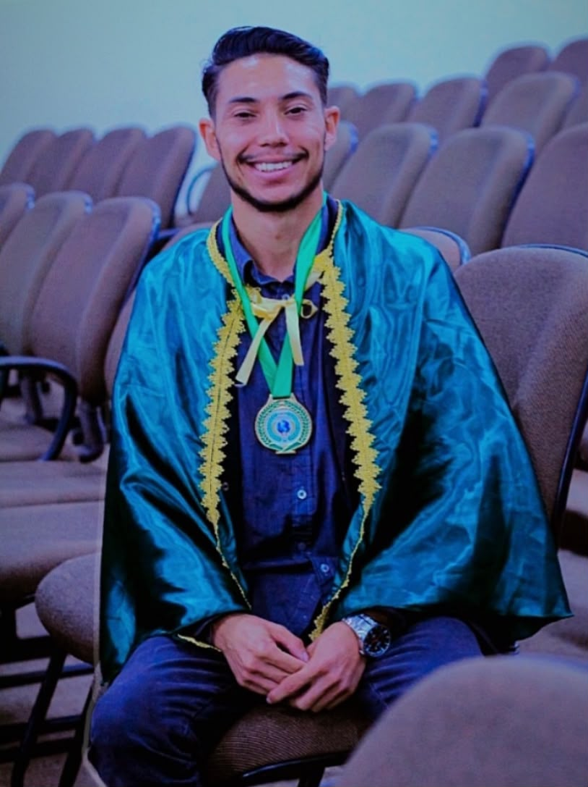
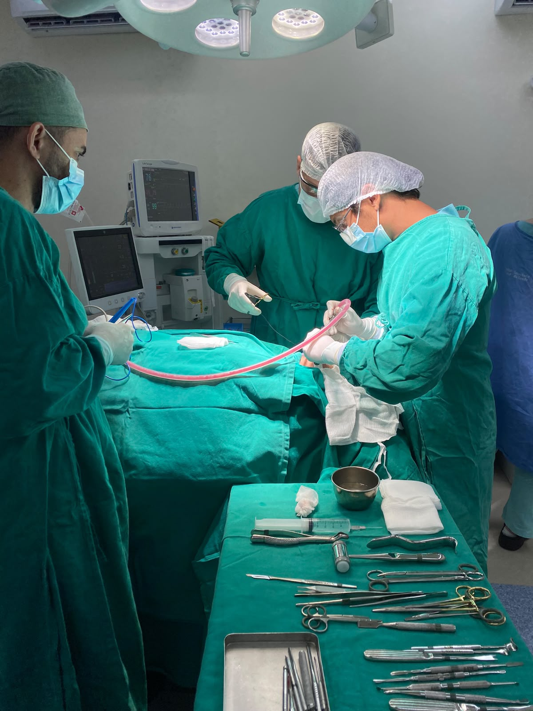
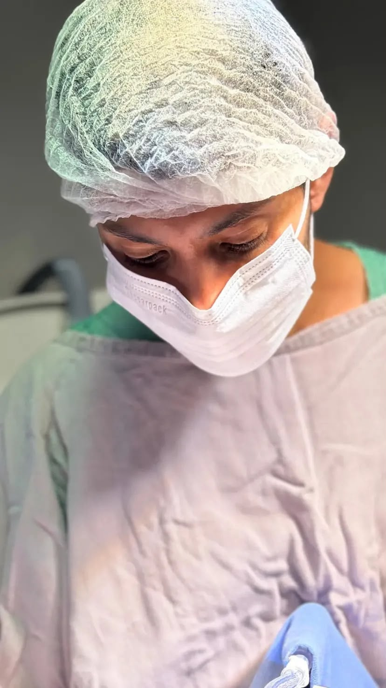

Cirurgia estética facial
Planejamento cirúrgico atento à harmonia facial, às características individuais e aos objetivos conversados durante a avaliação.
Saiba maisCirurgia estética facial e traumatologia bucomaxilofacial com atenção individual em cada etapa do cuidado.
Da infância em Campo Grande à vida dedicada à saúde: conheça a trajetória que me trouxe até aqui.



Formação, experiência e cuidadoMinha história começa em Campo Grande, Mato Grosso do Sul, onde nasci em 1994. Venho de uma família simples, de uma realidade em que as conquistas exigiam esforço, trabalho e persistência.
Sou filho de Edileuza Oliveira e Roque Domingos. Minha mãe teve um papel fundamental na minha formação. Trabalhou como empregada doméstica, dedicando grande parte da vida ao cuidado de outras famílias e à criação dos seus quatro filhos. Foi observando sua força e sua dedicação que aprendi, desde cedo, o valor do trabalho, da responsabilidade e da determinação.
Minha infância teve desafios e ausências, mas também foi o período em que comecei a construir os sonhos que me acompanhariam por toda a vida.
Ainda aos 16 anos, tomei uma decisão que mudaria meu caminho: concluir meus estudos e buscar uma formação universitária. Naquele momento, meu grande sonho era cursar Medicina. Embora a vida tenha me conduzido por outros caminhos, o interesse pela saúde, pelo cuidado humano e, principalmente, pela cirurgia nunca deixou de fazer parte de mim.
Primeiro, escolhi a Psicologia. Mais tarde, encontrei na Odontologia uma nova possibilidade de aproximar minha formação daquilo que sempre despertou meu interesse: a cirurgia.
Em 2019, deixei Campo Grande e me mudei para Santa Catarina para estudar Odontologia na Universidade Federal de Santa Catarina. Foi uma mudança importante, não apenas geográfica, mas também pessoal. Em 2023, concluí minha graduação e iniciei uma nova etapa da minha trajetória.
Hoje, sigo em formação na Cirurgia e Traumatologia Bucomaxilofacial, além de desenvolver meus estudos no mestrado em Ciências da Saúde. Minha caminhada continua sendo guiada pela curiosidade científica, pelo desejo de aprender e pela vontade de contribuir com a saúde das pessoas.
Mas minha identidade não se resume à profissão. Sou pai, valorizo minha família, gosto de cozinhar, praticar esportes, estar perto do mar, viajar, ler e escrever. Tenho uma relação importante com a fé e acredito que a vida é construída também pelos encontros, pelas experiências e pelos valores que carregamos.
Continuo sendo aquele jovem que, aos 16 anos, decidiu que sua história não seria definida pelas dificuldades do começo. Ainda tenho muitos sonhos, projetos e caminhos a percorrer.
Afinal, mais do que a profissão que escolhi, existe uma história que me trouxe até aqui — e ela continua sendo escrita.
Atuação em duas frentes que pedem planejamento cuidadoso e atenção às necessidades de cada paciente.
Planejamento cirúrgico atento à harmonia facial, às características individuais e aos objetivos conversados durante a avaliação.
Saiba maisAvaliação de traumas na face e orientação sobre os cuidados e caminhos de tratamento indicados para cada caso.
Saiba maisVeja o que cada procedimento envolve. A indicação depende de avaliação clínica, diagnóstico e planejamento individual.
Procedimentos voltados à estética, ao rejuvenescimento e à valorização da beleza natural, respeitando as características individuais de cada paciente.
Procedimentos cirúrgicos destinados à melhora dos contornos, proporções e características estéticas da face.
Atuação no diagnóstico e tratamento cirúrgico de alterações funcionais, traumáticas, congênitas e patológicas da face e dos ossos maxilares.
Mais do que transformar sorrisos e valorizar rostos, cuidar de pessoas, recuperar funções, reconstruir histórias e promover qualidade de vida.
Da primeira conversa à definição dos próximos passos, o processo é conduzido com escuta, informação clara e respeito às particularidades de cada caso.
Entre em contato com a equipe para informações e agendamento de avaliação.